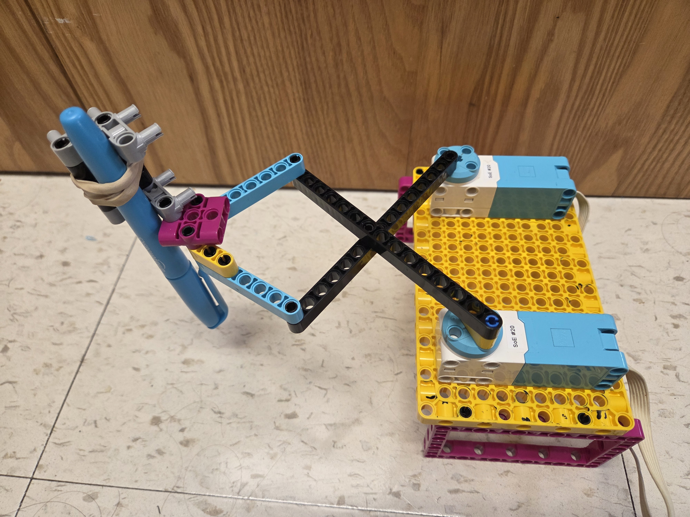
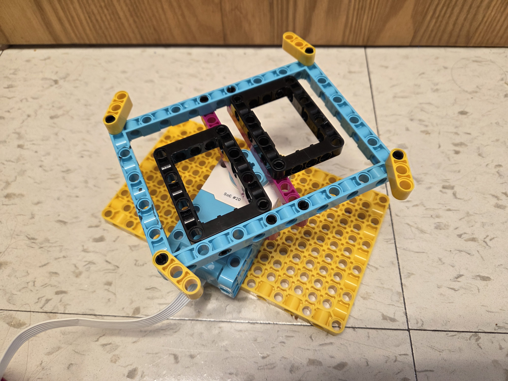
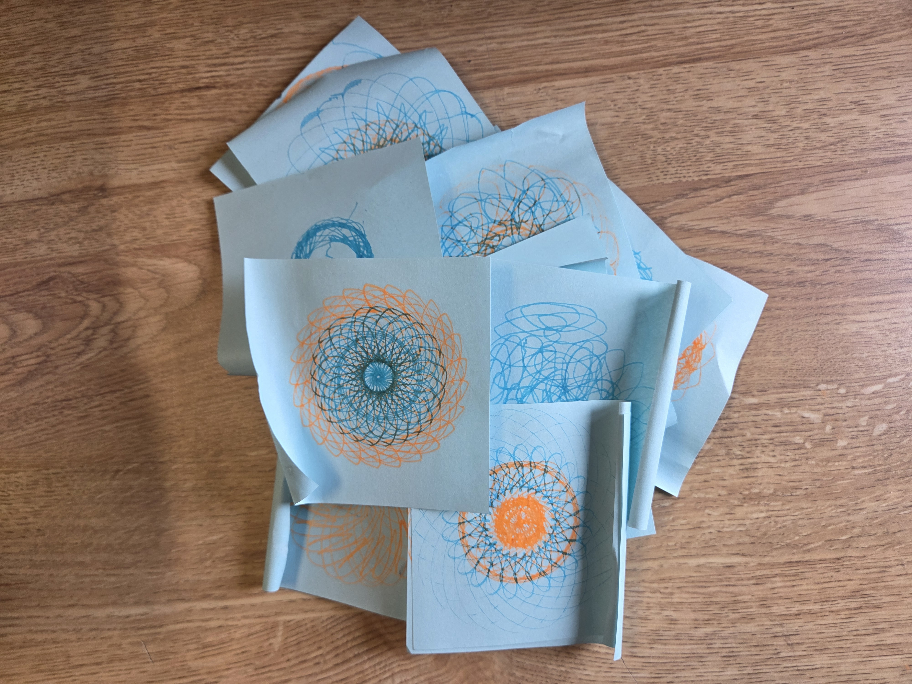
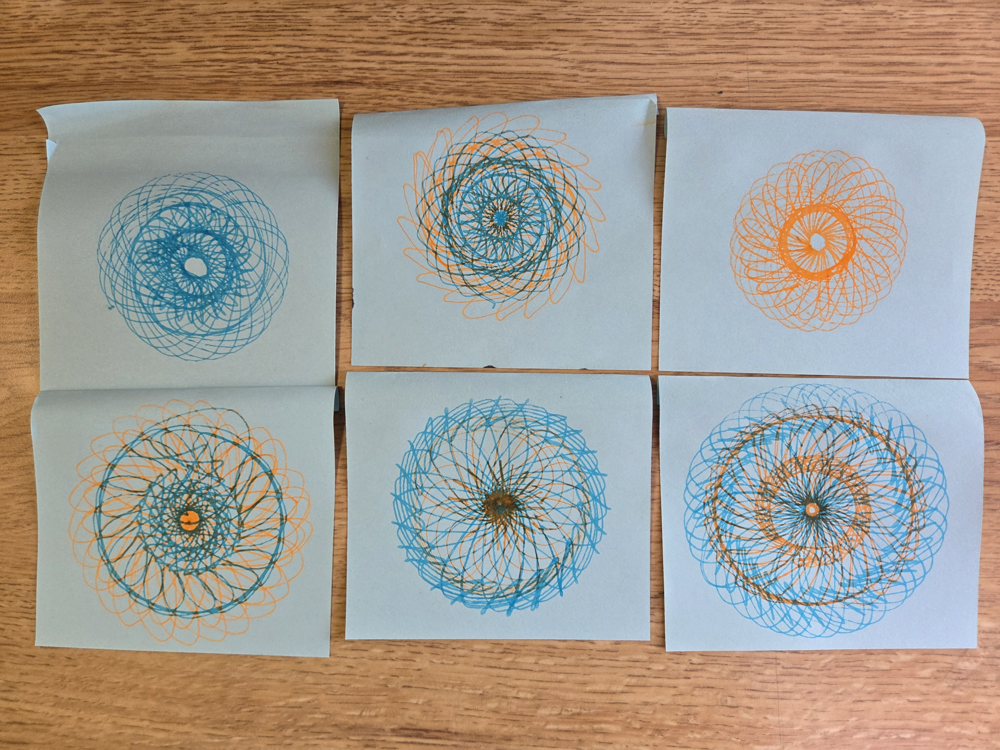

We designed and programmed a robot to create spirograph drawings. I was able to control the speed and direction of each individual motor, the starting position of the marker and each arm, and the speed of the paper rotating to create unique designs. It took me a lot of iterations to get the arms to be the right size, length, and positioning, and realizing I could make the paper itself turn helped me get my design working. I also tried variations such as making the speed of the motors a function of time, switching between colors, and adding random variables.